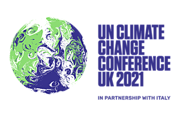
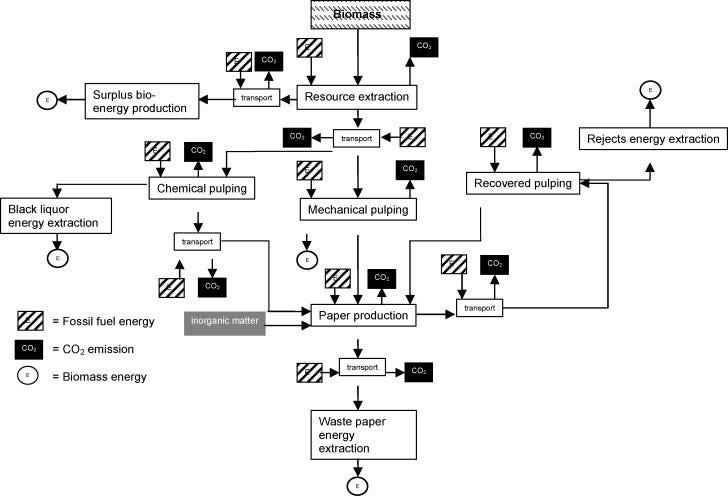

I’m Jonathan Burbaum, and this is Healing Earth with Technology: a weekly, Science-based, subscriber-supported serial. In this serial, I offer a peek behind the headlines of science, focusing (at least in the beginning) on climate change/global warming/decarbonization. I welcome comments, contributions, and discussions, particularly those that follow Deming’s caveat , “In God we trust. All others, bring data.” The subliminal objective is to open the scientific process to a broader audience so that readers can discover their own truth, not based on innuendo or ad hominem attributions but instead based on hard data and critical thought.
You can read Healing for free, and you can reach me directly by replying to this email. If someone forwarded you this email, they’re asking you to sign up. You can do that by clicking here .
If you really want to help spread the word, then pay for the otherwise free subscription. I use any fees to increase readership through Facebook and LinkedIn ads.
Today’s read: 6 minutes.

In honor of COP26 in Glasgow, I thought I’d start this one with a trivia question rather than a famous quote:
“Who is the author of the following passage? What was the occasion?”
(answer in the footnote):
“If we do not pursue an active climate policy, the temperature on earth is likely to increase by a global average of 1.5 to 4.5 degrees Celsius by the end of the next century. The greenhouse effect caused by us human beings thus threatens to thwart our efforts towards economic development and increased prosperity.
…
When all is said and done, it is immaterial, for the climate of our Earth, which country or factory emitted the CO2 or another climate-damaging gas. In our joint battle against these greenhouse gases, we should therefore consider how we can achieve a substantial transfer of knowledge and technology to the developing countries and at the same time use the funds globally available for climate protection as effectively as possible.” 1
“Paper or plastic?” That is a common question at many grocery store checkout lines. In San Francisco, where I live, if I forget to take a reusable bag to the store with me, it costs me a quarter per bag, a sort of tax on the distracted. But, for me, the choice (paper) has already been made by the City’s Board of Supervisors. So, to refine the choice, let’s imagine that I’m in the checkout line without a reusable bag somewhere that still allows free choice. I want the environmentally-friendly option for whatever nerdy reason, and I would like to know how big an environmental impact my choice will make.
There are three questions I’ll address in this installment:
-
What percentage of our trash is grocery bags?
-
Where does the quarter go?
-
Is a biodegradable paper bag really better for the environment than a plastic bag made from petrochemicals?
The first question is easy to answer. Despite the labels, grocery bags are not typically part of the household recycling stream. They are either recycled at the store or (more likely) thrown into the regular trash. Trash companies track “municipal solid waste” by weight:
So, let’s assume I consume one bag of groceries per day (which is high, at least for me) and throw it in the trash when I’m done. The US’s per capita generation of MSW was about 2 kilograms (2,000 g) per day from the graph above. A grocery bag weighs between 5 and 50 grams (see below). Thus, the amount of waste that is grocery bags is between 0.25% and 2.5%. Bottom line: Grocery bags are not a particularly significant contributor to MSW.
The second question is local to San Francisco, where the relevant law is here . It turns out that it isn’t really a tax. It’s a profit center for the store! The bag’s price goes to the store, and I’d be willing to bet that bags are among their highest margin items (recall that they used to give them away for free!). Unlike the various bottle and can deposits, none of the money goes into recycling! I wondered why the reusable bags disappeared from the checkout line of my local Safeway, and now I know.
The third question is the toughest one to answer, but it’s the one that is on point for this serial. While we know the point-of-use similarity between the bags, there are two key differences, the manufacturing process and the degradation process. Therefore, we need to draw the starting and finish lines carefully to compare apples to apples as much as possible.
Because there are different materials with different supply chains, drawing these lines is a challenge. We also need to define what we mean by “better” for the environment. If plastic itself is your pollutant of choice, then the answer is simple. But, in this series, we’re talking about atmospheric carbon dioxide, so that’s our measuring stick.
To start this off, I weighed three different grocery bags of approximately the same volume.
-
Paper, 57g (brown paper)
-
Plastic, 25g (#4, LDPE = low density polyethylene)
-
Plastic, 5 g (#2, HDPE = high density polyethylene)
Let’s simplify the problem further and make a couple of reasonable assumptions to normalize the processes. First, for manufacturing, let’s assume that the bags are made entirely of their main component. For paper, that’s cellulose, and for plastic, that’s polyethylene. Further, let’s assume that manufacturing starts at the plant gate, with wood for paper and geologic carbon sources for plastic. In making this choice, I include converting a material that occurs naturally, but I exclude extracting or transporting it to the plant gate. Finally, let’s assume that everything else is equal once the paper or plastic is created from the raw material. So, we need to compare the amount of energy used in making paper from raw wood versus the amount of energy used in making polyethylene from geologic carbon.
For disposal, let’s assume that all bags are burned completely, and the carbon they contain is released into the atmosphere. Conventional thinking (and a lot of reporting) suggests that the plastic will add CO2 while the paper will net to zero. But that’s unscientific: The atmosphere doesn’t care whether the carbon comes from trees or coal. It’s all the same damn molecule. If the choice were to leave the tree in the ground or cut it down to make a paper bag, which would you choose? I’ll separate the numbers so that you can discount the carbon involved in the paper bag if you’d like. But “biodegradable” is a double-edged sword—any biological degradation process takes carbon from the source and releases most of it into the air. So from a carbon dioxide perspective, it’d be better, for disposal at least, to have a non -degradable material.
I’m being explicit about the steps involved because I am well aware that assumptions will frame the result. There are many opportunities to insert “but what about…”, so I encourage you to do your own calculations. I’m happy to share mine.
I found the following reference for paper manufacturing:

This publication considers biomass energy and geologic carbon-based (“fossil fuel”) energy, tracks carbon dioxide emissions, and compares various methods. While the paper’s main point is to calculate whether recycling saves energy, it also provides critical energy factors for both electricity and process heat, allowing the analysis of the energy cost of papermaking (as conducted in practice). For comparison, I’ll choose the lowest energy process, but to be consistent, I won’t count “recovered” energy from byproducts of the process since that will release carbon dioxide.
Polyethylene is relatively straightforward: Ethylene is made from geologic sources and then polymerized using a catalyst. Low-density polyethylene requires higher pressure than high density, and the different processes have different energy intensities. Again, I’ll use the lowest energy process. To normalize the energy numbers, I will use the same emissions from electricity generation and heat (steam) generation as in the paper paper.
I’ll spare you the chemistry details for incineration, but cellulose has less carbon by weight than polyethylene, so it releases less carbon dioxide when burned. In addition, oxygen adds weight, so the carbon dioxide that results will be heavier than the bag we start with.
So, after all this setup, what do these numbers say?
From this data, the best choice is the flimsy HDPE plastic bag! It’s a matter of weight more than material. I can justify choosing paper for several reasons, but saving Earth’s atmosphere is not one of them.
Key numbers for the table are as follows:
From the Paper paper cited above:
Heat: 72 kg CO2/GJ
Electricity: 0.522 kg CO2/kWh
Pulping paper takes 700 kWh and 22.2 GJ per metric ton
Creating paper from pulp takes 180 kWh and 5.5 GJ per metric ton
Converting a hydrocarbon stream to ethylene takes 180 kWh and 24.6 GJ per metric ton, from Table 2 of Boulamanti & Moya, “Production costs of the chemical industry in the EU and other countries: Ammonia, methanol and light olefins” in Renewable and Sustainable Energy Reviews 68 part 2, 2017, pp 1205-1212.
Producing LDPE from ethylene takes 5.96 GJ, and HDPE takes 3.14 GJ per metric ton (combined), from Table 4.9 of IEA (2007), Tracking Industrial Energy Efficiency and CO2 Emissions, IEA, Paris iea.org
The backreference for these numbers is not readily available, so I assumed half was heat and half was electricity.
The quoted source is German Chancellor Helmut Kohl’s opening remarks to the first annual “Conference of Parties” (aka COP1) in Berlin. Yes, it was 26 years ago, and yes, there was a German Chancellor before Angela Merkel. Available at unfccc.int